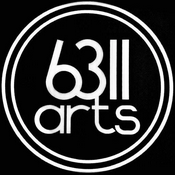

Bringing Together Established Chicago Artists, Emerging Student Voices, and Inclusive Community Programming
6311arts Presents May Exhibition, Bringing Together Established Chicago Artists, Emerging Student Voices, and Inclusive Community Programming
CHICAGO — This spring, Edgewater community center 6311arts will present its May Exhibition, a multi-faceted showcase running May 16 through July 4, 2026, with an opening reception on Saturday, May 16 from 6–9 p.m.
Designed as both an exhibition and a gathering point for multiple strands of Chicago’s creative community, the May Exhibition brings together work by established local artists, emerging student makers, and artists working within inclusive educational settings.
Queue — Brad Gibbs
The center’s main gallery will feature Queue, a presentation of works by Chicago artist Brad Gibbs, whose mixed-media paintings combine abstraction, layered texture, and vivid figurative suggestion.
Art on the Edge — Austin Special Chicago
Also featured is Art on the Edge, a group presentation from Austin Special Chicago, a program serving adults with developmental disabilities through arts-centered enrichment and community engagement. Five artists from the program, working under the guidance of educator Edwige Massart, will present work that underscores 6311arts’ commitment to accessibility, expression, and broad participation in the arts.
American Surrealism — DePaul Artist Coalition